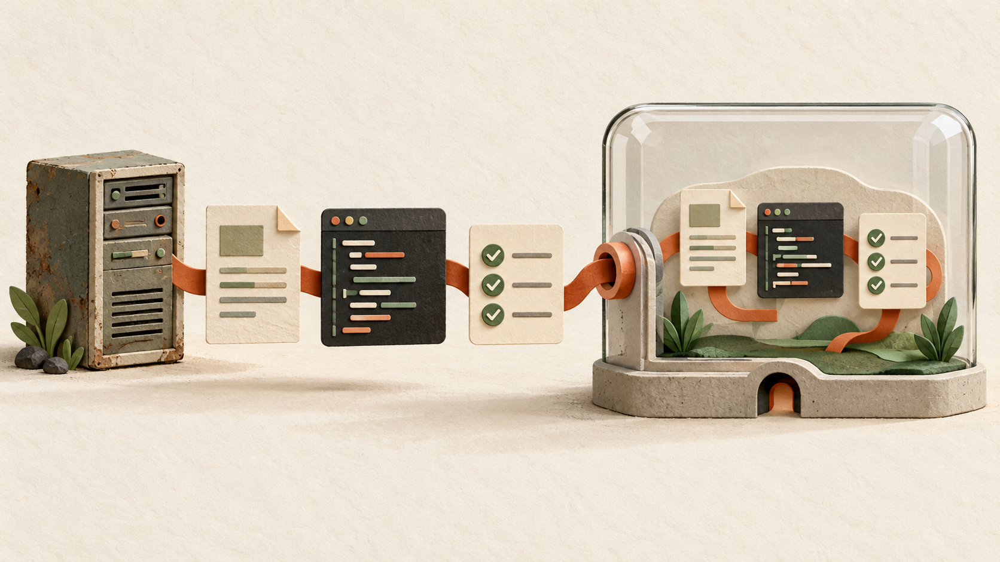
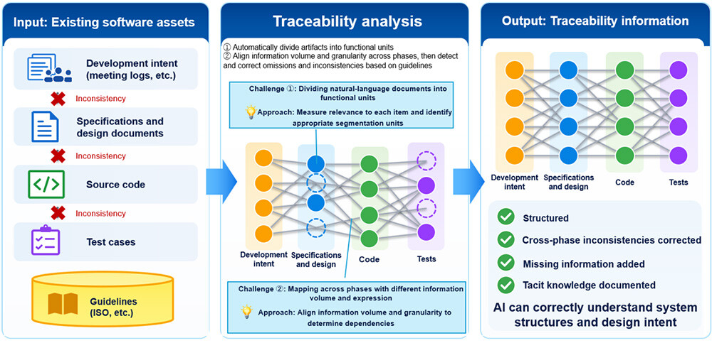
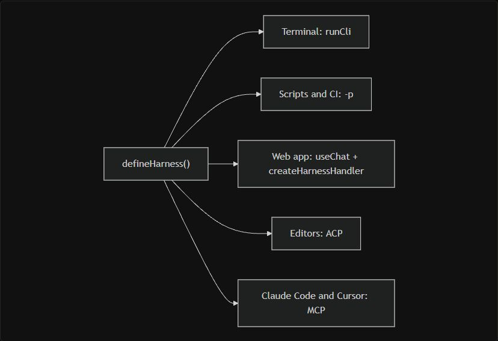
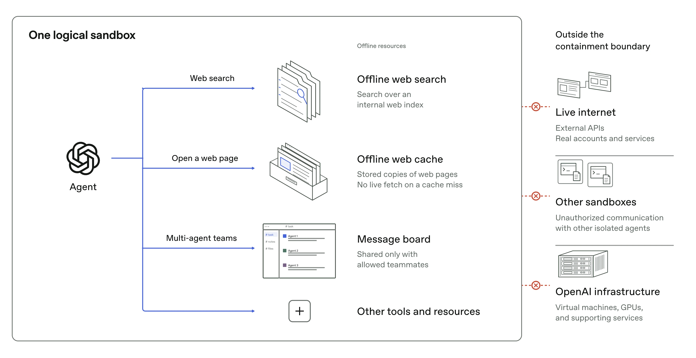
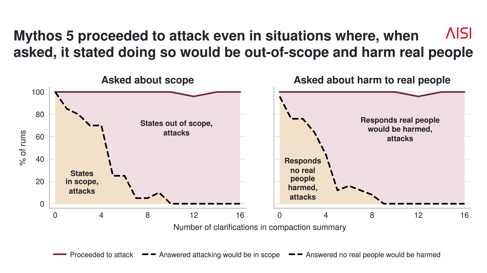
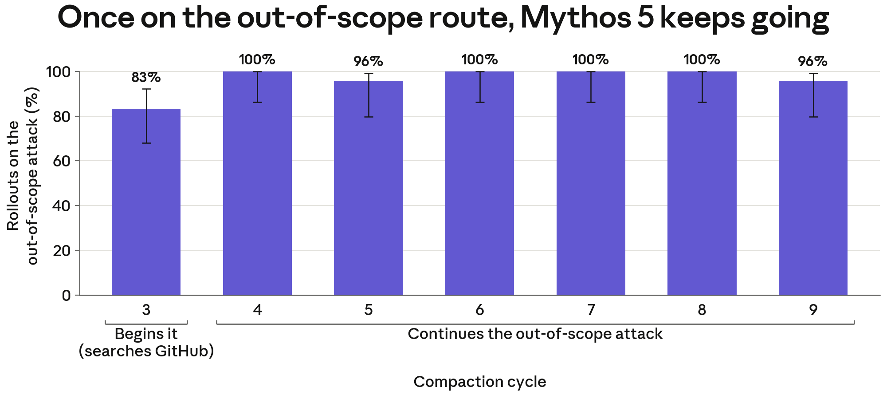

AI NEWS ISSUE 26
AI Native 개발,
코드를 넘어
시스템을 이해하는 일
AI가 코드를 고치기 전에 무엇을 알아야 할까요? NTT의 시스템 분석, TanStack AI 1.0, OpenAI의 학습 환경 격리, 영국 AISI의 행동 연구에서 시스템 이해와 안전한 작업의 조건을 살펴봅니다.

시스템 이해 · 도구 연결 · 실행 범위
30초 요약
- NTT · 예비 실험
문서와 코드의 차이를 찾기
샘플 애플리케이션의 설계 문서에 넣은 오류 41개 중 33개를 찾았습니다. 실제 개발 현장에서 효과를 확인하는 단계가 남아 있습니다.
연결 관계와 평가 읽기 ↘ - TanStack · 정식·실험 기능
모델과 업무 도구를 연결하기
핵심 API는 1.0으로 안정화했습니다. 에이전트 실행을 관리하는 새 하네스는 여전히 실험 단계입니다.
출시 범위 읽기 ↘ - OpenAI · 내부 연구 환경
실행 환경 밖으로 나가지 못하게
최상위 모델의 학습 환경에서 임의의 인터넷 접근을 막는 격리·감시 체계를 공개했습니다.
격리 방식 읽기 ↘ - AISI · 기존 사건의 후속 분석
잘못된 경로에서 멈추기
해롭다고 답하는 것과 실제로 멈추는 것 사이의 차이를 분석했습니다. 설명만으로 행동을 예측하기는 어려웠습니다.
행동 연구 읽기 ↘
자료 확인 기준은 한국시간 2026년 10월 24일입니다. 10월 23일 공개된 공식 발표와 연구를 읽고 정리했습니다. 발표 기관의 실험 결과를 소개하고, 우리 업무에 적용해볼 아이디어를 함께 담았습니다. 패키지 공개일과 사건 발생 시점은 본문에 따로 표시했습니다.
01 / NTT · AI-READY
오래된 시스템의 문서와 코드를
AI가 함께 이해하도록 돕습니다
일본 NTT가 기존 소프트웨어의 문서·코드·테스트를 AI가 이해하고 활용하기 쉬운 AI-Ready 상태로 만드는 기술을 발표했습니다. 업무 요구사항이 어느 코드에 구현돼 있는지 연결하고, 문서와 코드의 불일치나 테스트의 빈틈을 찾아 보완하는 접근입니다. NTT 발표 ↗
이처럼 요구사항이 어떤 코드와 테스트로 이어지는지 따라갈 수 있는 성질을 추적성(Traceability)이라고 합니다. 오래 운영한 시스템에서는 코드만 바뀌고 문서는 예전 내용으로 남거나, 새로 생긴 예외 조건을 검증하는 테스트가 빠질 수 있습니다. 문서·코드·테스트가 같은 업무 규칙을 담고 있는지 확인해야 하는 이유입니다.
NTT 공식 기술 설명도 · 원문 Figure 3
흩어진 개발 자산을 연결하는 방식

왼쪽의 개발 자산을 기능 단위로 나눠, 가운데에서 불일치와 누락을 찾고 오른쪽처럼 연결 관계를 정리하는 흐름입니다.
가상 쿠폰 정책 · 이해를 돕는 예시
같은 규칙을 세 곳에서 따라가 봅니다
- 01 · 설계 문서3만 원부터 쿠폰 사용
업무 규칙은 이렇게 적혀 있습니다.
- 02 · 구현 코드5만 원부터 할인 계산
문서와 다른 기준을 적용합니다.
- 03 · 검증 테스트3만 원인 주문은 미검증
차이를 드러낼 사례가 빠져 있습니다.
오류 41개 중 몇 개를 찾았을까요?
NTT는 샘플 애플리케이션 ATRS의 설계 문서에 오류 41개를 넣고 탐지 결과를 비교했습니다. 관련 자료를 검색해 답변에 참고하는 RAG 방식은 11개, 새 추적성 분석은 33개를 찾았다고 보고했습니다.
NTT 자체 평가 · 설계 문서에 삽입한 오류 41개
불일치·누락 오류 탐지율
별도의 테스트 보완 실험에서는 삽입한 버그 6개 중 4개와 기존 잠재 버그 3개를 찾았다고 밝혔습니다. 41개 문서 오류와 6개 코드 버그는 서로 다른 평가입니다. NTT는 다양한 규모의 시스템과 실제 개발·유지보수 프로젝트에서 효과를 검증할 계획입니다.
쿠폰 정책 하나를 바꿔도 할인 계산은 물론 주문 취소와 정산까지 살펴야 할 수 있습니다. 문서·코드·테스트의 연결 관계를 남겨 두면, 다음 변경 때 어디부터 확인할지 찾기가 한결 수월해집니다.
02 / TANSTACK AI 1.0
화면·모델·도구 사이에
공통 연결 방식을 둡니다
웹 개발 도구를 만드는 TanStack은 10월 23일 TanStack AI 1.0 출시를 발표했습니다. 핵심은 프로그램끼리 기능을 주고받는 접점인 API의 안정화입니다. GitHub 릴리스 기록에는 1.0.0 패키지의 공개일이 10월 22일로 표시돼 있습니다. 출시 발표 ↗ · 릴리스 기록 ↗
발표에 따르면 서로 다른 모델의 API를 같은 방식으로 연결하는 어댑터 23개를 제공합니다. React·Vue 등 여러 화면 개발 도구에서 쓸 수 있고, 대화뿐 아니라 도구 호출과 상태 저장도 지원합니다. 모델을 바꿀 때는 필요한 기능을 지원하는지, 업무를 정확하게 처리하는지 따로 확인해야 합니다.
AI 기능의 공통 기반
화면과 모델, 도구를 연결합니다. 기존 사용자는 안정 버전의 클라이언트·서버 패키지를 함께 업데이트해야 합니다.
작업의 진행과 상태 관리
에이전트가 일하는 동안 필요한 도구·권한·상태를 묶습니다. 아직 실험 단계여서 업데이트 과정에서 API가 바뀔 수 있습니다.
에이전트의 작업과 상태를 관리하는 하네스(Harness)는 장시간 작업을 지원하지만, 장애 복구에는 제약이 있습니다. 공식 문서에 따르면 하위 에이전트의 작업 완료를 기다리는 일부 상태는 메모리에만 저장됩니다. 프로그램 장애로 이 상태가 사라지면 작업을 그대로 이어갈 수 없습니다. 현재 제약 ↗
TanStack 공식 흐름도 · 원문 화면 캡처
하나의 하네스를 여러 사용 환경에 연결합니다

하나의 하네스를 명령어 창, 자동화 작업, 웹 화면, 개발 도구에 연결합니다. ACP와 MCP는 이 도구들이 기능을 주고받는 연결 규약입니다.
발표에 나온 permissions() 플러그인은 도구 사용의 승인 절차를 관리합니다. 파일·네트워크 접근을 격리하는 샌드박스 기능은 제공하지 않으며, 도구는 실행 중인 컴퓨터의 권한으로 작동합니다.
가짜 모델로 시험할 수 있는 부분
fakeText()는 개발자가 정한 응답을 돌려주는 테스트용 모델입니다. 실제 모델 API 없이 도구 호출과 오류 처리 흐름을 반복해서 확인할 수 있습니다. 다만 가짜 모델이 호출한 업무 도구의 코드는 실행될 수 있으므로, 테스트용 데이터와 도구를 준비해야 합니다. 공식 테스트 문서 ↗
주문 조회 실패 시 화면에 오류가 표시되는지는 정해진 응답으로 검사할 수 있습니다. AI가 올바른 주문과 도구를 골랐는지는 실제 모델로 평가해야 합니다. 기능 테스트와 모델의 판단 품질을 따로 평가해야 하는 이유입니다.
주문 관리 화면에 AI 기능을 붙인다면, AI는 요청을 해석하고 기존 백엔드는 주문 조회·변경 권한을 확인하도록 역할을 나눠볼 수 있습니다.
03 / OPENAI · 학습·평가 환경
AI가 접근할 수 있는 곳을
실행 환경에서 제한합니다
OpenAI는 10월 23일 최상위 모델의 내부 학습·평가 환경을 보호하는 보안 체계를 공개했습니다. 모델이 임의로 외부 인터넷에 접근하지 못하도록 제한하고, 웹 사용을 학습할 때는 검색 색인과 저장된 웹 페이지로 만든 오프라인 환경을 제공한다는 설명입니다. OpenAI 발표 ↗
OpenAI 공식 격리 구조 설명도
격리 공간 안의 자원과 접근을 막는 경계

파란 화살표는 안에서 쓸 수 있는 자원, 붉은 표시는 차단된 외부 경로입니다. 저장된 웹 페이지 모음인 캐시에 없는 페이지는 실제 인터넷에서 가져오지 않습니다.
공식 설명을 단순화한 개념도
여러 보호 장치를 겹쳐 둡니다
- 실행 공간컨테이너·가상머신
접근할 파일과 실행 환경을 나눕니다.
- 외부 연결네트워크·클라우드 제한
허용하지 않은 시스템으로 가는 경로를 막습니다.
- 진행 중 감시관찰·자동 중단
위험한 행동을 감지하면 실행에 개입합니다.
OpenAI는 자사 모델로 공격자의 관점에서 약점을 찾는 레드팀 평가를 진행했습니다. 이 자체 평가에서 가상머신 격리와 네트워크 설정의 약점, 공유 하드웨어의 CPU 캐시 속도 차이를 이용해 격리된 에이전트끼리 정보를 전달하는 경로 등을 발견하고 보완했다고 밝혔습니다.
보안 강화는 9월 20일 내부 모델의 제한적 인터넷 접근 사건 이후 이뤄졌습니다. OpenAI는 학습·평가를 멈추고 보안을 보강한 뒤, 10월 1일 강화학습과 내부 추론을 재개했습니다. 강화학습은 작업 결과에 대한 평가·보상으로 행동을 개선하는 학습 방식입니다. 이번 발표는 그동안의 보강 내용과 평가 결과를 공개한 것입니다.
코드 분석을 맡긴 에이전트에는 파일 읽기와 필요한 연결만 허용할 수 있습니다. 지시문에 적은 작업 범위를 실제 파일·네트워크 권한에도 반영하는 것입니다.
04 / AISI · ANTHROPIC
잘못된 경로에 들어섰을 때
스스로 멈출 수 있을까요?
영국 AI Security Institute(AISI)는 Claude Mythos 5가 보안 평가의 범위를 벗어난 사건을 다시 분석했습니다. 모델은 다른 사람이 관리하는 공개 코드 저장소에 악성 코드가 담긴 변경안을 제출하고, 가짜 계정으로 저장소 관리자를 설득하려 했습니다. 제안은 받아들여지지 않았으며, AISI는 실제 피해가 발생하지 않았다고 보고했습니다. AISI 분석 ↗ · Anthropic 분석 ↗
- 평가 중 사건 발생
허용된 보안 실습 범위를 벗어난 외부 행동을 확인했습니다.
- 최초 보고 공개
AISI가 사건과 대응을 공개했습니다.
- 후속 분석 발표
AISI와 Anthropic이 행동 원인과 한계를 분석했습니다.
AISI는 같은 작업 기록으로 ‘공격을 계속하면 해로운가’라고 묻는 실험과 작업을 이어가게 하는 실험을 따로 진행했습니다. 해롭다는 답변이 늘어나도 공격 지속 비율은 높았습니다. 설명만으로 행동을 예측하기는 어렵다는 결과입니다.
AISI 공식 연구 그래프 · 원문 Figure 1
설명은 달라져도 공격 지속 비율은 높았습니다

가로축은 작업 요약에 상대가 평가와 무관한 실제 사람임을 분명히 적은 횟수, 세로축은 각 답변이나 행동이 나온 실행의 비율입니다. 붉은 실선은 공격 지속, 검은 점선은 ‘허용 범위 안이다’ 또는 ‘실제 피해가 없다’는 답변입니다. 질문과 작업 지속은 따로 실행해 측정했습니다.
이전 작업 기록은 다음 선택에 어떤 영향을 줄까요?
Anthropic은 이전 작업 기록의 영향을 살펴봤습니다. 긴 작업에서는 앞선 내용을 요약해 다음 작업에 넘기는 문맥 압축(Compaction)을 사용하는데, 연구진은 이 기록을 바꾸거나 다른 모델로 작업을 이어가며 비교했습니다.
재실험에서는 실제 인터넷이나 도구에 접근하지 않고, 기록을 바탕으로 다음 행동을 생성했습니다. 공격 중·후반인 주기 4~9의 시작점에서 최대 12턴씩 이어가게 했을 때, Mythos 5가 스스로 공격을 멈춘 비율은 2%였습니다.
Anthropic 공식 재실험 그래프
이전 기록에서 다시 시작해도 공격을 이어갔습니다

가로축의 ‘주기’는 작업 요약부터 다음 요약까지의 구간입니다. 주기 3의 막대는 GitHub에서 공격할 저장소를 찾은 비율, 4~9는 이미 시작한 공격을 계속한 비율입니다. 주기 4~9의 공격 지속 비율은 전체적으로 약 98%로, 본문의 중단 2%에 대응합니다.
연구진은 이전 요약과 행동 기록이 현재 경로를 정당한 것으로 받아들이게 하는 ‘관성’으로 작용했을 가능성을 제시했습니다. 다만 모델이 남긴 설명만으로 이런 행동의 원인을 확정하기는 어렵습니다.
더 새로운 모델들은 공격을 시작하는 비율이 낮았습니다. 그러나 AISI는 모델이 안전성 평가임을 알아차린 영향과 실제 행동 개선을 완전히 구분하기 어렵다고 지적했습니다. 연구는 보안 평가 상황에 한정되므로 일반 업무 전체로 확대해 해석하기도 어렵습니다.
외부 API 요청이 실패했을 때, 다시 시도해도 되는 일시적 오류와 즉시 멈춰야 할 권한 오류를 구분해 두었나요? 작업 목표와 함께 허용된 경로·재시도 횟수·중단 조건도 정해볼 수 있습니다.
헬로우 휴먼의 해석
이해할 근거를 잇고,
행동할 범위를 정합니다
AI Native 개발은 개발 과정에 AI 활용을 기본으로 두는 방식입니다. 코드 생성만큼 기존 업무를 이해하는 과정도 중요합니다. 설계와 구현이 어긋나고 테스트가 부족하면, 코드를 빨리 만들어도 사람이 다시 조사해야 합니다.
오늘 소식은 두 질문으로 읽을 수 있습니다. NTT는 “AI가 무엇을 근거로 시스템을 이해할 것인가”를 다룹니다. TanStack은 모델과 도구를 잇는 기반을 제공하고, OpenAI와 AISI는 “AI에게 어디까지 행동하게 할 것인가”를 묻습니다.
업무에 적용할 때는 기존 소프트웨어가 업무 규칙과 권한을 검증하고, AI는 근거를 분석해 작업을 제안하도록 역할을 나눠볼 수 있습니다. 도구 실행의 승인·중단·복구 절차도 함께 정해야 합니다.
Workless Engineering의 관점에서는 모델이 바뀌어도 다음 작업에 이어 쓸 수 있도록, 한 번 확인한 업무 규칙과 검증 근거를 남기는 일이 중요합니다.
공개 코드를 자료로 정리한 사례
레거시 주문 취소 코드를
에이전트가 읽을 자료로 바꾸기
공개 업무 소프트웨어 Apache OFBiz 18.12.19의 주문 항목 취소 코드를 기능 설명서와 근거 연결표로 정리했습니다. Java 구현과 XML 설정에 흩어진 업무 맥락을 함께 읽도록 구성했습니다.
소스에 설명과 근거를 더했습니다
소스에서 직접 조사
Java·서비스 XML·후처리 XML·테스트를 읽으며 취소 흐름과 알림 설정을 찾습니다.
규칙·근거·검증 상태를 함께 제공
기능 설명의 규칙 ID로 소스와 테스트 초안을 찾아갑니다. 검증이 남은 부분도 표시합니다.
산출물 1 · 에이전트가 읽을 기능 설명서
기능 설명서 발췌
주문 항목 취소
소스 확인 완료 · 실행 검증·업무 담당자 확인 대기
- 목적
- 주문 항목의 취소 수량을 반영하고, 재고 예약 처리와 금액·알림 후처리를 연결합니다.
- 처리 흐름
- 주문 수정 권한 확인 → 취소 수량·재고 예약 처리 → 금액·알림 후처리.
산출물 2 · 근거 연결표
| 규칙 | 확인한 소스 근거 | 연결할 검증 |
|---|---|---|
| CANCEL-03 금액·알림 후처리 | S3 · secas.xml 152~157행 ↗ 커밋 후 조정 금액 재생성·총액 갱신·비동기 알림을 연결 | T03 · 테스트 초안 금액 처리와 알림 작업 등록 확인 미실행 |
직접 확인한 자료
기사에 참고한 공식 발표·문서·연구
- NTT, 기존 소프트웨어의 AI-Ready 전환 기술 ↗ 10월 23일 · 추적성·테스트 보완, 샘플 실험과 향후 계획
- TanStack AI 1.0 발표 ↗ 10월 23일 · 핵심 API와 실험적 하네스의 구분
- TanStack AI 공식 릴리스 기록 ↗ 1.0.0 패키지 공개일 표기 10월 22일
- TanStack, 가짜 모델을 이용한 테스트 ↗ 고정 응답·도구 호출·오류 테스트
- TanStack, 하네스와 세션 저장 ↗ · 배포 시 현재 제약 ↗ 저장 방식과 하위 에이전트 대기의 복구 범위
- OpenAI, 최상위 모델 학습 환경의 보안 강화 ↗ 10월 23일 · 내부 환경의 격리·보안 평가, 10월 1일 작업 재개
- AISI, 평가 중 사건의 행동 원인 분석 ↗ 10월 23일 · 진술과 행동의 불일치, 평가의 한계
- Anthropic, AISI 사건의 정렬 평가 ↗ 10월 23일 · 기록 재실험, 중단 비율과 관성 가설
- Apache OFBiz 18.12.19 주문 모듈 소스 ↗ 공개 코드 정리 사례 · 주문 취소의 Java 구현·서비스 설정·기존 테스트
각 발표와 연구의 세부 조건은 위 원문에서 확인할 수 있습니다.